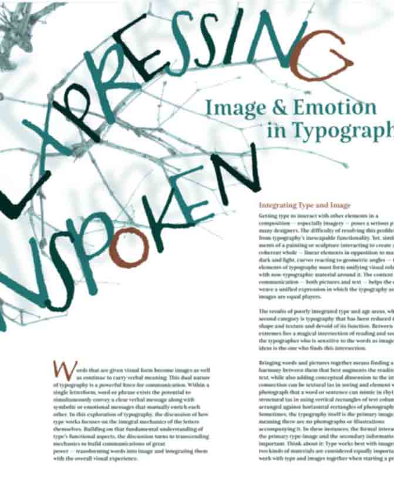
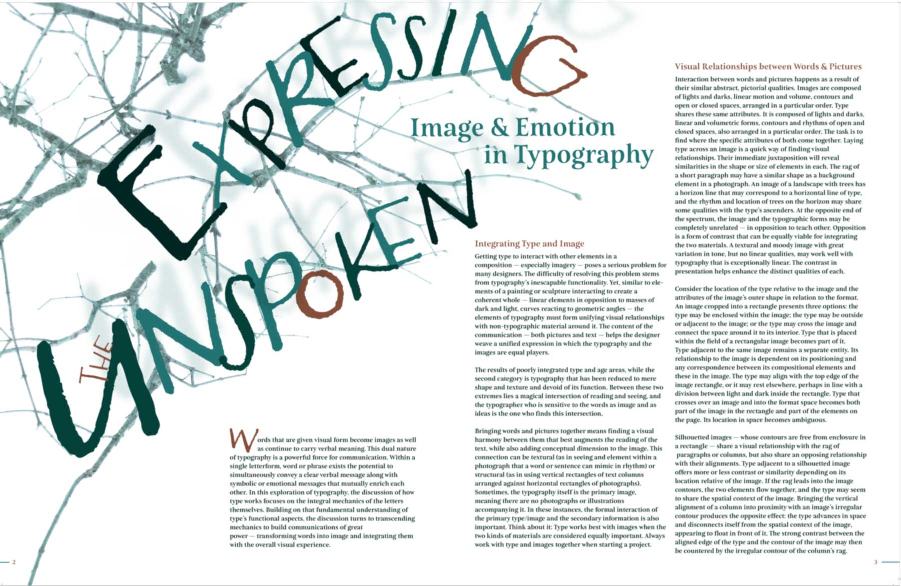

Expressing the unspoken

click to expand
This was a first year typography assignment where we had to marry a photograph to the typoraphy work. I went for a creepy look that reflected the undulating effects of the branches from the photograph taken overhead a shrub in the winter.

x